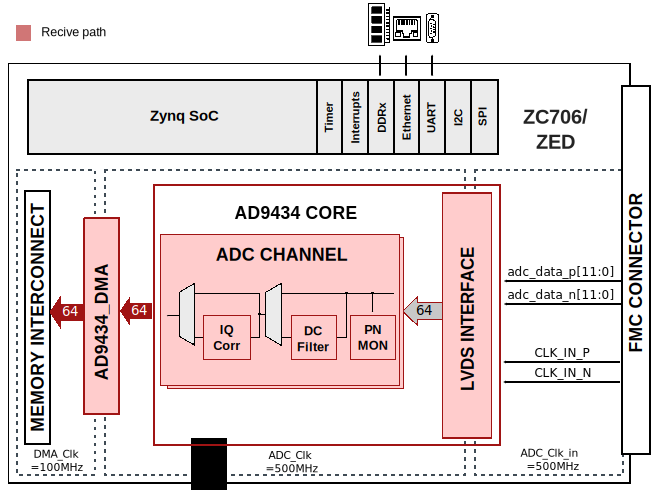

AD9434-FMC HDL project#
Overview#
The AD9434 is a 12-bit monolithic sampling analog-to-digital converter (ADC) optimized for high performance, low power, and ease of use. The part operates at up to a 500 MSPS conversion rate and is optimized for outstanding dynamic performance in wideband carrier and broadband systems. All necessary functions, including a sample-and-hold and voltage reference, are included on the chip to provide a complete signal conversion solution. This reference design includes a data capture interface and the external DDR-DRAM interface for sample storage. It allows programming the device and monitoring its internal status registers. The board also provides other options to drive the clock and analog inputs of the ADC.
Supported boards#
Supported devices#
Supported carriers#
Evaluation board |
Carrier |
FMC slot |
|---|---|---|
FMC LPC |
||
FMC LPC |
Block design#
Block diagram#
{kind=link}
Clock scheme#
There are multiple ways to configure the clock source for AD9434. In this section is presented a guide on how to rework the board to the desired user clock circuitry. Below is a table on what components are needed to install or uninstall on the evaluation board.
Clock Configuration |
Install |
Uninstall |
|---|---|---|
Ext. Signal Gen. |
as it is |
as it is |
Oscillator |
R209, P1(shunt) |
— |
LVPECL |
R208, R307, R308, C300, C311, C304, C305 |
C209, C210 |
LVDS |
R208, C306, C307 |
C209, C210, R311 |
For LVPECL and LVDS configurations, appropriate charge pump filter circuit values are necessary to have an optimized clock buffer performance from AD9517-4.
CPU/Memory interconnects addresses#
The addresses are dependent on the architecture of the FPGA, having an offset added to the base address from HDL(see more at HDL Architecture).
Instance |
Zynq/Microblaze |
|---|---|
axi_ad9434 |
0x44A0_0000 |
axi_ad9434_dma |
0x44A3_0000 |
SPI connections#
SPI type |
SPI manager instance |
SPI subordinate |
CS |
|---|---|---|---|
PS |
SPI 0 |
AD9517 |
1 |
PS |
SPI 0 |
AD9434BCPZ |
0 |
Interrupts#
Below are the Programmable Logic interrupts used in this project.
Instance name |
HDL |
Linux Zynq |
Actual Zynq |
|---|---|---|---|
axi_ad9783_dma |
13 |
57 |
89 |
These are the board-specific interrupts (found in here).
Building the HDL project#
The design is built upon ADI’s generic HDL reference design framework. ADI does not distribute the bit/elf files of these projects so they must be built from the sources available here. To get the source you must clone the HDL repository.
Then go to the project location (projects/ad9434_fmc/carrier) and run the make command by typing in your command prompt (this example is for ZC706):
Linux/Cygwin/WSL
user@analog:~$ cd hdl/projects/ad9434_fmc/zc706
user@analog:~/hdl/projects/ad9434_fmc/zc706$ make
A more comprehensive build guide can be found in the Build an HDL project user guide.
Resources#
More information#
Support#
Analog Devices, Inc. will provide limited online support for anyone using the reference design with ADI components via the EngineerZone FPGA reference designs forum.
For questions regarding the ADI Linux device drivers, device trees, etc. from our Linux GitHub repository, the team will offer support on the EngineerZone Linux software drivers forum.
For questions concerning the ADI No-OS drivers, from our No-OS GitHub repository, the team will offer support on the EngineerZone microcontroller No-OS drivers forum.
It should be noted, that the older the tools’ versions and release branches are, the lower the chances to receive support from ADI engineers.